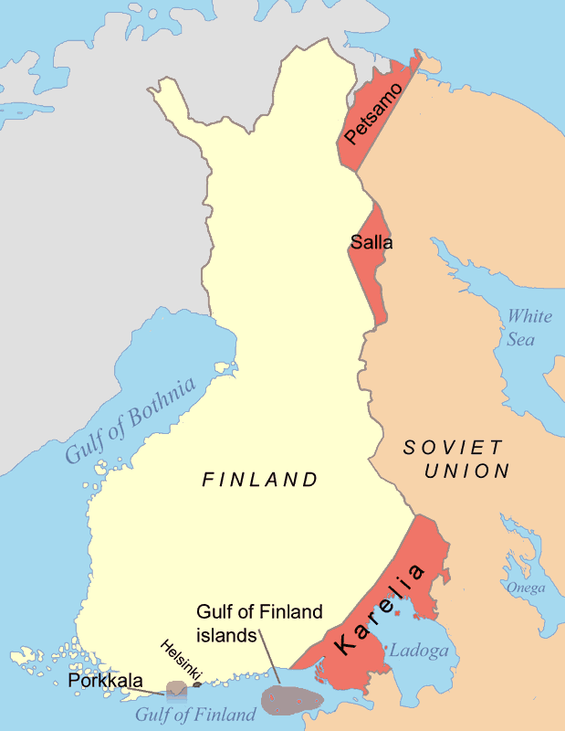
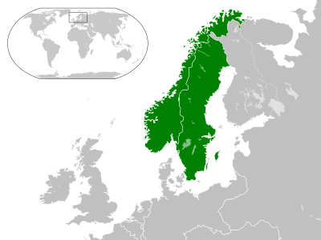
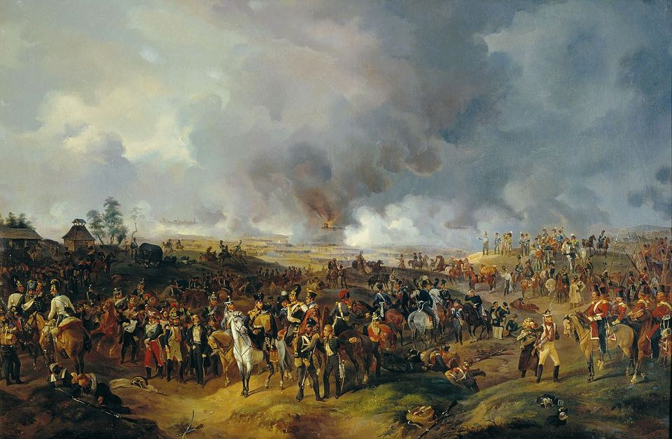
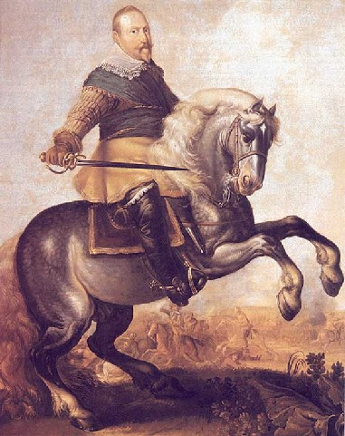
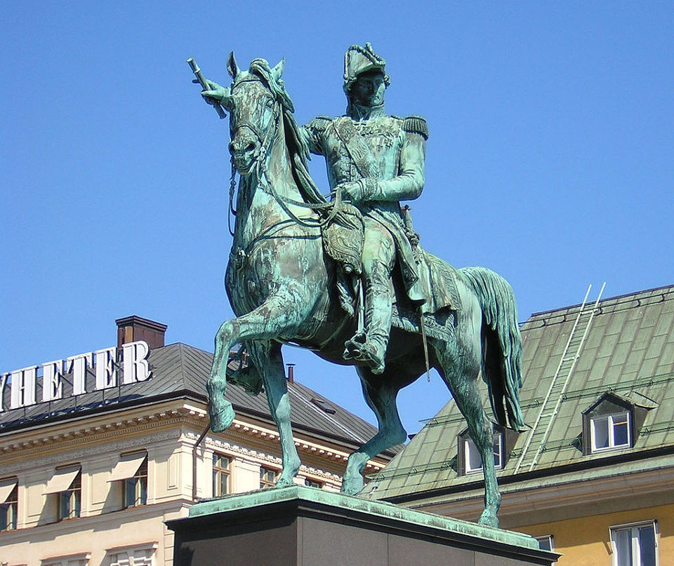

스톡홀름의 프랑스 왕 (10편) - 로또를 맞은 것은 누구인가
게시: 2018-08-27T06:30:00+09:00
베르나도트는 스웨덴 국민들이 자신에게 바라는 것, 즉 러시아로부터 핀란드를 되찾아오는 임무의 어려움을 누구보다 잘 알고 있었습니다. 이건 북구의 촌뜨기 스웨덴 사람들이 국제 사정을 몰라서 가진 소원일 뿐, 도저히 가능한 일이 아니었습니다. 그는 스웨덴 사람들의 소망을 처리하는데 있어, 자신이 그저 지시받은 목표를 무조건 수행해내는 단순무식한 장군이 아니라 목표 설정 자체부터 재검토하는 진정한 국가 지도자급 인물이라는 것을 처음부터 증명해보입니다.
그는 떠오르는 강대국 러시아로부터 핀란드를 되찾아오는 것이 물리적으로 불가능할 뿐만 아니라, 설령 나폴레옹의 힘을 빌어 일시적으로 되찾아온다고 해도 그건 일시적인 만족감을 줄 뿐, 결국 반드시 러시아와 끝없는 전쟁을 불러올 뿐이라는 것을 꿰뚫어 보았습니다. 러시아는 끊임없이 서방으로 진출하려는 나라였고, 또 핀란드와는 넓은 국경선을 맞대고 있었기 때문이었습니다. 게다가 핀란드인들은 스웨덴의 통치를 좋아하지도 않았으니 핀란드인들의 지지도 없이 러시아로부터 핀란드를 지킬 수는 없었습니다. 그렇다고 스웨덴 사람들에게 '꿈 깨라, 너희들은 씹지도 못할 고깃덩이를 탐내고 있다'라고 핀잔을 줄 수는 없었습니다. 베르나도트는 스웨덴이 진정한 번영을 누리기 위해서는 핀란드가 아니라 노르웨이를 손에 넣어야 한다고 판단했습니다. 노르웨이를 보유하고 있는 덴마크는 러시아에 비하면 매우 허약한 상대였고, 또 지정학적으로도 노르웨이만 손에 넣으면 스칸디나비아 반도 내에서 스웨덴은 외적의 침입을 우려하지 않고 단단한 천연 국경을 구축할 수 있었기 때문이었습니다.

(핀란드와 러시아 사이의 국경은 무려 1340km나 됩니다. 지금도 핀란드는 러시아의 간섭과 영향을 끊임없이 받고 있지요. Finlandization이라는 말이 사전에 실릴 정도니까요. 위 지도에서 붉은색 부분은 제2차 세계대전 이후 소련에게 빼앗긴 핀란드 영토입니다.)

(베르나도트의 구상처럼 노르웨이를 손에 넣으면, 스웨덴은 바다에 의해 유럽과 분리되어 국방에 있어 매우 안전한 상태가 됩니다.)
나폴레옹이 베르나도트에게 프랑스에 대한 적대 행위 금지 약속을 받아내려 했던 것처럼, 베르나도트도 나폴레옹에게 요구하는 것이 있었습니다. 바로 노르웨이였습니다. 아마 자신의 퇴직금조로 생각했던 것일까요 ? 아마 이때가 나폴레옹과 베르나도트의 뒤틀린 관계가 회복될 수 있는 마지막 기회였을 것입니다. 물론 나폴레옹은 그에 응하지 않고 그 기회를 뻥 차버리고 말았습니다. 자신에게 총부리를 겨눌지도 모르는 스웨덴에게 줄 선물을 프랑스 말을 잘 따르는 착실한 동맹국인 덴마크로부터 뜯어낼 수는 없기 떄문이었습니다. 그러나 결과만 놓고 생각해보면 이때 베르나도트에게 노르웨이를 선물하는 것이 훨씬 더 나은 결정이었을 것입니다. 어차피 덴마크는 나폴레옹으로부터 노르웨이를 양보하라는 무리한 요구를 받는다고 해도 프랑스로부터 떨어져 나갈 처지가 못 되었습니다. 그에 비해, 노르웨이를 선물함으로써 스웨덴을 확실한 프랑스 동맹으로 끌어들였다면 1813년 라이프치히에서의 패배가 없었을지도 모르는 일이었습니다.
비록 노르웨이를 선물꾸러미에 넣어오지는 못했지만, 베르나도트는 1810년 11월 2일 스톡홀름에 도착하여 엄청난 환영을 받았습니다. 그는 여기서 이름을 스웨덴식 카알 요한(Karl Johan)으로 바꾸고 또 스웨덴 법률이 요구하는 바에 따라 종교도 카톨릭에서 개신교인 루터교로 개종했습니다. 그는 스톡홀름에서 만나는 모든 사람들에게 대단히 좋은 인상을 주며 재빨리 인기와 영향력을 확대했습니다. 심지어 평민인 그가 왕세자로 책봉된 것을 내심 못마땅히 여기고 있던 국왕 카알 13세와 그의 왕비 샤를로타도 베르나도트를 각각 따로 만나보고는 그의 사람됨과 군주로서의 그릇에 크게 호감을 느꼈습니다. 카알 13세는 베르나도트를 처음 만나 본 뒤, 측근에게 이렇게 말했다고 합니다.
"(왕세자 책봉에 있어서) 난 꽤 큰 도박을 벌였는데, 결국 내가 이긴 것 같구만."
샤를로타도 베르나도트가 '모든 면에서 완벽한 신사'라며 칭찬을 아끼지 않았습니다. 그러나 베르나도트가 스톡홀름에 도착하자마자 인기를 독차지하며 대세남이 된 것은 결코 그의 사교성이나 예의범절이 훌륭했기 때문은 아니었습니다. 그가 얼마나 잘 준비된 군주였는지는 도착 3일 뒤인 1810년 11월 5일 스웨덴 의회(Riksdag)에서 행한 다음 연설 내용을 직접 읽어보시면 느끼실 수 있을 것입니다. (저도 간만에 불어 공부하는 셈 치고 불어 원문과 대조 번역했습니다. 물론 구글 번역기 도움을 크게 받았습니다.)
« J'ai vu la guerre de près, j'en connais tous les fléaux ; il n'est point de conquête qui puisse consoler la patrie du sang de ses enfants, versé sur une terre étrangère. J'ai vu le grand Empereur des Français, tant de fois couronné des lauriers de la victoire, entouré de ses armées invincibles, soupirer après l'olivier de la paix. Oui, Messieurs, la paix est le seul but glorieux d'un gouvernement sage et éclairé ; ce n'est point l'étendue d'un Etat qui en constitue la force et l'indépendance : ce sont ses lois, son commerce, son industrie, et par-dessus tout, son esprit national. »
"나는 전쟁을 가까운 거리에서 봐왔습니다. 나는 그 모든 참상을 잘 압니다. 외국 땅에 뿌려진 그 자식들의 피에 대해 조국이 위로받을 정도의 정복이란 존재하지 않습니다. 그토록 많은 승리의 월계관을 쓰고 또 그 무적의 군대에 둘러싸인 위대한 프랑스 황제가 평화의 올리브 가지 뒤에서 한숨을 내쉬는 것을 봐왔습니다. 그렇습니다, 여러분, 평화야말로 현명하고 계몽된 정부의 유일하게 영광스러운 목표입니다. 국력과 독립을 뒷받침해주는 것은 국가의 영토 넓이가 아닙니다. 그것은 그 국가의 법과, 통상과, 산업과, 그리고 무엇보다 그 국민 정신입니다."
어떻습니까 ? 어느 현대 국가에서 대통령이 하는 연설로도 전혀 손색이 없는 현대적인 명문 아닌가요 ? 제가 베르나도트에 대해 이렇게 따로 긴 시리즈를 쓰게 된 것도 이 연설문을 보고 너무나 감동을 받았기 때문입니다.
그는 평생을 전쟁터에서 보낸 군인이었으나 결코 총칼의 힘으로 스웨덴을 부강하게 만들 생각이 없었고, 나폴레옹의 부하였음에도 나폴레옹의 지시에 따를 생각이 없었습니다. 결정적으로, 핀란드를 바라는 스웨덴 사람들의 욕망 때문에 스웨덴 왕세자로 선출되었으면서도 결코 그 위험한 욕망을 채워주려 하지 않았습니다.
샤를로타 왕비가 끈질기게 구스타프 왕자를 지지했던 것은 그녀가 속절없는 보수 혈통주의자이기 때문은 아니었습니다. 그녀는 처음 아우구스트가 왕세자로 책봉되었다는 소식을 들었을 때 '나는 덴마크인도, 러시아인도, 프랑스인도 되고 싶지 않다, 나는 스웨덴인이고 싶다'라고 말한 바 있었습니다. 즉, 스웨덴은 더 이상 러시아와 같은 외세에 휘둘리지 않는 독립국가가 되는 것을 무엇보다 바랐던 것입니다.
베르나도트는 스톡홀름에 오자마자 정말 스웨덴 사람처럼 생각하고 행동했으며, 자신이 결코 나폴레옹의 강아지가 아니라는 것을 보여주었습니다. 또한 그는 핀란드에 대한 스웨덴인들의 욕망이 얼마나 위험하고 잘못된 방향으로 향한 것인지를 설득했고, 대신 노르웨이를 손에 넣는 것이 스웨덴이 영원히 스웨덴으로 남을 수 있는 길이라는 점을 조야에 알렸습니다. 그는 이런 진정성과 뛰어난 식견에 바탕을 둔 리더쉽을 통해서, 비록 강력한 의회에 의해 선출된 외국 태생의 왕세자 신분임에도 불구하고 순식간에 실질적인 모든 권력을 손에 넣었습니다. 특히 의회는 분열되어 있었고 국왕 카알 13세는 건상 상태가 좋지 않았기 때문에 베르나도트의 권력은 자연스럽게 굳어져 갔습니다.
그러나 그는 또한 현실론자였습니다. 나폴레옹은 곧 스웨덴에 대해 대륙봉쇄령에 참여할 것과 영국에 대해 선전포고를 할 것을 요구했습니다. 이는 영국과의 교역이 큰 비중을 차지하던 스웨덴 경제에 큰 타격을 주는 정책이었습니다. 그는 나폴레옹에 대해 이를 갈면서도, 그의 요구에 마지못해 응했습니다. 그는 어디까지나 프랑스의 무력에 굴복할 수 밖에 없어서 영국에 선전포고한다는 제스처를 뚜렷히 드러냈기 때문에, 영국도 사실상 스웨덴을 중립국으로 간주했습니다. 비록 교역량은 1/10 수준으로 급감할 수 밖에 없기는 했지만 영국과의 무역도 암암리에 계속 되었습니다.
전에도 언급했지만, 베르나도트가 오늘날 프랑스에서 배신자 취급을 받는 것은 1813년 라이프치히 전투에서 프랑스편이 아니라 동맹국 편을 들었기 때문입니다. 그러나 그것은 분명히 베르나도트의 잘못이 아니라 어디까지나 나폴레옹의 불신 때문이었습니다. 그에 대해서는 차후 러시아 침공 편에서 다루도록 하겠습니다.

(1813년 10월의 라이프치히 전투입니다. 이 전투는 프랑스어로 Bataille des Nations, 즉 여러 나라들의 전쟁이라는 이름으로 불릴 정도로 거의 모든 유럽국가들이 참전한 대전투였습니다. 이베리아 반도의 포르투갈과 스페인은 빠졌지만, 이탈리아와 나폴리까지 참전했으니까요. 여기서 패배하면서 나폴레옹의 몰락이 결정됩니다.)
카알 13세가 베르나도트의 왕위 계승에 대해 '도박에서 이겼다'라고 표현한 것은 정말 제대로 된 표현이었습니다. 보통 사람들은 베르나도트가 운수대통하여 평민 하사관에서 시작하여 왕위에 올랐다고들 이야기하지만, 그의 업적을 보면 로또를 맞은 것은 베르나도트가 아니라 스웨덴이었습니다. 베르나도트가 위대한 왕이었다는 점은 오늘날 스웨덴의 중립노선을 확고히 닦았다는 점에서 가장 잘 드러납니다. 과거 17세기 북구의 사자라고 불리며 30년 전쟁에서 맹활약했던 스웨덴 국왕 구스타프 아돌프(Gustavus Adolphus)는 스웨덴을 강국으로 이끌었다고는 하지만 반면에 스웨덴을 기나긴 전쟁으로 끌어들였습니다. 많은 스웨덴 청년들이 외국 땅에서 싸우지 않아도 될 전쟁에서 목숨을 잃어야 했지요.
그러나 베르나도트는 제6차 대불동맹전쟁에 참전한 것과 스웨덴과의 합병을 반대하는 노르웨이에 대한 군사작전 외에는 전혀 전쟁을 벌이지 않았습니다. 그나마 무조건 항복을 받아낼 수도 있었던 노르웨이 전쟁에서도 노르웨이의 자치권을 인정하는 등 매우 관대한 협상 조건을 내걸어 최대한 전쟁을 빨리 끝냈지요. 스웨덴 역사상 이 1814년 노르웨이 작전이 스웨덴이 참전했던 마지막 전쟁이었습니다. 스웨덴의 중립과 그에 따른 안정과 평화가 오늘날 스웨덴의 발전에 얼마나 큰 도움이 되었는지는 굳이 강조하지 않아도 될 것입니다.

(북구의 사자 구스타프 아돌프입니다. 비록 멋있는 별명을 달아서 폼은 나겠지만, 그런 멋진 별명을 얻기 위해 얼마나 많은 스웨덴 병사들이 죽어야 했을까요 ? 나폴레옹도 마찬가지입니다. 그는 불멸의 영광을 누리고 있지만, 그의 전쟁으로 상처입은 많은 국가들 중 가장 많은 젊은이들을 잃은 국가가 바로 프랑스입니다.)
또 그는 경제왕이 되기 위해 노력했습니다. 그가 국민 경제에 대해 얼마나 애썼는지를 보여주는 일화가 있습니다. 그와 함께 일했던 스웨덴 귀족인 트롤-바흐트마이스터(Trolle-Wachtmeister)가 전하는 바에 따르면 그가 왕세자 시절, 스웨덴 궁정에서 통치에 대한 실무 교육을 받을 때 베르나도트는 다른 것은 몰라도 경제 부분에 대해서만은 자신을 가르칠 사람이 없다며 다음과 같이 말했다고 합니다. "스웨덴에 나보다 더 휼륭한 군인이 300명이 있다고 해도 뭐라고 반박하지 않겠네. 하지만 난 경제 부문에 대해서는 오랜 시간 특별한 수업을 거쳤으므로, 그 부문에 대해서만은 내가 스웨덴 내에서 최고 전문가라고 자신하네."
베르나도트는 말 뿐만 아니라 행동으로 자신이 경제왕임을 증명해보였습니다. 그는 내륙 교통 통신망에 투자하고 통상을 장려하며, 민법과 형법을 정비 반포하고 교육을 진흥하는 등 나폴레옹의 프랑스 통치를 상당히 모방하여 내치에 매우 열정적으로 힘을 썼습니다. 그 결과, 그의 26년 통치 기간 동안 인구가 크게 늘었습니다. 그의 노년기에는 노르웨이를 제외한 스웨덴 국내의 인구만 해도 구스타프 4세가 핀란드를 잃기 직전 스웨덴과 핀란드의 인구를 다 합한 것보다 더 많았습니다. 밖에서 잃은 것은 안에서 찾은 셈이지요. 그도 왕위에 오르고 난 뒤 점차 우클릭하여 언론 검열을 하는 등 욕을 먹기도 했으나, 전체적으로 그는 스웨덴 뿐만 아니라 노르웨이 국민들로부터도 사랑받는 인기왕이었습니다.

(그의 검열 정책 등으로 인해 인기가 추락했을 때 일부에서는 그를 탄핵해야 한다는 주장이 나오기도 했지만, 그는 평생 국민들로부터 상당한 인기를 누리는 행복한 왕이었습니다. 물론 가장 큰 것은 평화와 번영을 목표로 하는 그의 통치가 훌륭했기 때문입니다만, 일개 사병에서 출발하여 나폴레옹 휘하 원수까지 올랐다가 왕이 된 그의 경력에 대해, 국민들이 '어때 우리 왕 쩔지?' 라며 대단히 자랑스럽게 여겼다고 합니다.)
이로써 1810년의 주요 사건이었던 베르나도트의 스웨덴 왕세자 책봉건이 끝났습니다. 마무리는 카더라 통신으로 끝내겠습니다. 흔히 베르나도트는 젊은 시절 열혈 자코뱅으로서 가슴에 'Mort aux Rois' (Death to the Kings, 왕들에게 죽음을)라는 문신을 새겼고, 이로 인해 왕이 된 이후 절대 사람들에게 옷을 벗은 모습을 보이지 않았다고 하지요. 그의 사후에 그의 시신을 검시한 궁정 관료들에 의해 그것이 사실로 드러났다는 이야기를 (기억은 안나지만) 저도 어딘가에서 읽었습니다. 그러나 영어판 Wikipedia에 따르면 그런 문신이 있었다는 이야기는 근거가 없는 소문이며, 그런 소문이 나게 된 것은 1833년 공연된 'Le Camarade de lit' (잠자리 친구)라는 프랑스 연극에서 어떤 늙은 척탄병이 '지금은 스웨덴 왕이 된 베르나도트가 그런 문신을 새겨가지고 있었다'라고 말하는 장면이 나온 것이 계기가 되었다고 합니다. 연극 속에서도 나중에 그 문신은 흔히 알려진 대로 'Mort aux Rois'가 아니라 'Vive la république' (공화국 만세)라는 문구인 것으로 나옵니다. 실제로 그런 문신이 있었는지 여부는 확인된 바가 없다고 합니다만, 확실한 것은 분명히 젊은 시절 베르나도트는 열혈 공화주의자였다는 것입니다. 그가 1797년 남긴 기록에 '원칙과 확신에 의한 공화주의자로서, 나는 왕당파놈들과 죽을 때까지 싸울 것이다'라고 다짐하는 문구가 있다고 합니다.
Source : The Life of Napoleon Bonaparte by William M. Sloane
https://en.wikipedia.org/wiki/Charles_XIII_of_Sweden
https://fr.wikipedia.org/wiki/Charles_XIV_Jean
https://en.wikipedia.org/wiki/Charles_XIV_John_of_Sweden
https://en.wikipedia.org/wiki/Hedvig_Elisabeth_Charlotte_of_Holstein-Gottorp
https://en.wikipedia.org/wiki/Union_between_Sweden_and_Norway